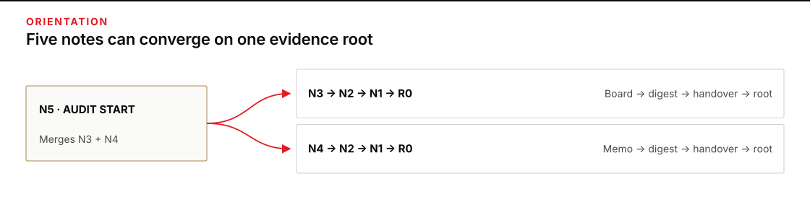
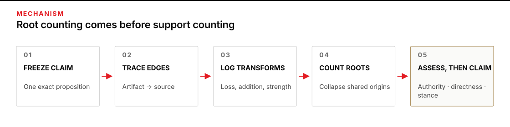
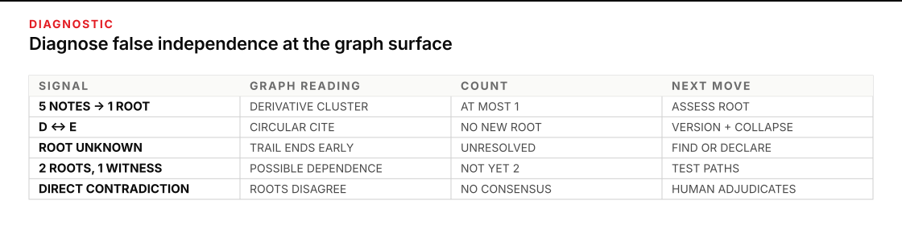

Use it when a pile of notes starts to look like corroboration
Five notes can carry one claim without providing five pieces of evidence. A handover becomes a digest, the digest becomes a schedule card, two later notes cite those derivatives, and the final brief reports “multiple sources.” The surface has multiplied. The origin has not.
Plan for 60–75 minutes. You will leave with a claim-lineage graph and ledger: one inspectable record showing which artifacts carry the claim, how each artifact derives from another, what changed during each transformation, how many evidence roots remain, and what confidence correction follows.
Start after P4 · The director’s second brain. That course path gives you a navigable vault and citations you can walk. The move here begins after a cited note opens: keep walking backward until you can distinguish original evidence from retellings of it.

Figure transcript
The audit starts at N5, a note that merges N3 and N4 and calls them two confirmations. The first backward branch is N5 to N3 to N2 to N1 to R0. The second backward branch is N5 to N4 to N2 to N1 to R0. N1 paraphrases R0, N2 summarizes N1, N3 imports N2, N4 restates N2, and N5 merges N3 with N4. The union contains five note artifacts, N1 through N5, but both branches terminate at the same unverified voice memo R0. The distinct root count is one; authoritative direct confirmation is still zero.
Trace the claim as a graph of artifacts and transformations
Work one claim at a time. An artifact is any durable carrier of the claim: a note, message, report, recording, ticket, table, or page. A derivation edge records that one artifact’s content was influenced by another. A transformation names what happened on that edge: quotation, paraphrase, summary, translation, extraction, normalization, merge, or revision.
This vocabulary is a plain operational use of the W3C PROV model. PROV calls durable things entities, the processes that use and generate them activities, and the people, organizations, or software responsible for those activities agents. Its wasDerivedFrom relation connects a generated entity to a used entity when the used entity influenced the result. You do not need to encode formal PROV to borrow its discipline: keep the carrier, the transformation, and responsibility separate.
| Question | Graph element | Vault example | Why it matters |
|---|---|---|---|
| What carries the claim? | Artifact / entity | Weekly Ops Digest | Counts the actual objects, not vague “mentions.” |
| What produced the new carrier? | Transformation / activity | Summarized a handover | Exposes where qualifiers, dates, or scope could change. |
| What earlier carrier influenced it? | derives-from edge | Digest derives from handover | Prevents a derivative note from posing as a new origin. |
| Who or what performed it? | Responsible agent | Duty analyst or import script | Supports accountability, but does not confer truth. |
Choose an arrow convention and write it down
In the ledger below, arrows point from the derived artifact back to the artifact it used: N3 → N2 means “N3 derives from N2.” That direction matches the audit move. Start at the claim in front of you and walk backward. Other graph systems reverse the arrow; either convention works if the label and transcript remove doubt.
A root is an origin in this graph, not a certificate of truth
A root source is the earliest reachable evidence-bearing artifact for the scoped claim whose own derivation is not known in the graph. “Earliest reachable” is deliberately honest. A root may later turn out to be another retelling. It may be anonymous, mistaken, stale, fabricated, or outside its author’s authority. Root status says that your current trail stops there; it does not promote the artifact.
Root source is a graph term here, not a synonym for primary source. The PROV data model treats primary-source status as relative to a topic and subject to domain conventions. Your current root may be secondary to the event and still be the place where the recorded trail ends.
A derivation edge is not a support edge either. A rebuttal can quote a report in order to contradict it, and a digest can derive from a note without endorsing every claim in that note. Record support, contradict, or unresolved for the scoped claim after reading the artifacts; never infer stance from the existence of an edge.
Count roots only after tracing every carrying artifact. Then assess each root on separate axes:
- Authority: is its source responsible or competent for this proposition? An authorized facilities owner can approve a closure; a colleague repeating hallway talk cannot.
- Directness: does it record the event, measurement, decision, or first-hand observation, or report somebody else’s report?
- Stance: does it support the exact claim, contradict it, or leave it unresolved at the strength stated?
- Uncertainty: what qualifier, missing step, date boundary, or provenance gap limits use?
Those axes are not interchangeable. An authorized executive can relay hearsay. A direct witness may lack decision authority. A source can be both direct and wrong. The W3C Provenance Incubator final report makes the boundary explicit: provenance supports trust judgments, but trust is a contextual judgment derived from provenance and other quality information, not provenance itself.
Count origins, not costumes
- Freeze the claim. Write the proposition with actor, action, object, place, and time precise enough that two artifacts can genuinely agree or disagree.
- Inventory carriers. List every artifact used to support or contradict that exact proposition.
- Follow each edge backward. Open the cited artifact. Record the relationship and the transformation; do not stop because the intermediate note looks polished.
- Mark transformation loss. Compare wording across the edge. Note dropped qualifiers, widened scope, translated terms, rounded numbers, merged actors, or changed dates.
- Collapse derivative branches. Artifacts that terminate at the same root form one lineage cluster for root counting.
- Assess roots. Record authority, directness, stance, and uncertainty before stating any support count or operational conclusion.
The corrected count is not always “one root equals one support.” One root can contradict the claim, or merely record uncertainty. Multiple roots can also share one witness, dataset, or upstream collection process. When that broader dependence matters, use The Independence Spectrum to inspect the system paths. This graph stays narrower: it reveals artifact genealogy.

Figure transcript
First, freeze one claim with enough actor, action, object, place, and time detail to compare exact propositions. Second, trace each derived artifact back to every artifact that influenced it. Third, label each transformation and record information lost, added, or strengthened. Fourth, collapse derivative branches that terminate at the same root and count unique reachable roots. Fifth, assess each root separately for authority, directness, support or contradiction, and uncertainty before writing a bounded claim. Root count removes duplicate genealogy but does not prove truth or full system-path independence.
Follow one rumor through five notes
A training coordinator is preparing a non-acting space-planning brief. The claim under review is:
Claim C-7: North Annex will close on 30 September.
The brief cites five internal notes. Before reading the table, predict the maximum number of distinct evidence roots those five notes could represent from their titles alone. The honest answer is a range from one to five. Titles and locations do not reveal genealogy; only the edges do.
| Artifact | Claim wording | Derives from | Transformation | What changed |
|---|---|---|---|---|
R0 · voice memo | “A facilities tech thinks the Annex may go offline around 30 September.” | Unknown | Recorded recollection | No named speaker, approval record, or direct notice; “thinks,” “may,” and “around” bound the report. |
N1 · Shift Handover | “North Annex likely offline 30 September; unconfirmed.” | R0 | Paraphrase | Retains uncertainty but sharpens “around” to an exact date. |
N2 · Weekly Ops Digest | “North Annex closes 30 September.” | N1 | Summary | Drops “likely” and “unconfirmed.” Possibility becomes fact. |
N3 · Space Board | “Closure scheduled: 30 September.” | N2 | Field extraction and normalization | Adds the institutional-sounding word “scheduled.” |
N4 · Relocation Memo | “Per the weekly digest, closure is 30 September.” | N2 | Quotation-like restatement | Preserves the digest’s overstatement and adds no observation. |
N5 · Director Note | “Space Board and Relocation Memo confirm the 30 September closure.” | N3 and N4 | Merge | Two branches from N2 are mistaken for two independent supports. |
Using the stated arrow convention, the graph is:
N5 → N3 → N2 → N1 → R0
↘ N4 ↗
Artifact mentions of C-7: 5 notes
Distinct reachable roots: 1 (R0)
Independent supporting roots established: at most 1
Authoritative, direct confirmation established: 0The five-note support count collapses to one lineage root. Even “one support” is too generous if it implies confirmation: R0 is an unverified recollection of what an unnamed technician may have thought. The repaired sentence is:
Five notes repeat one unconfirmed report that North Annex may close around 30 September. No independent, authorized closure notice was found.
Confidence is corrected in words, not by dividing a score by five. The operational state is unresolved, and the next check is concrete: ask the accountable facilities owner for the dated closure decision or approved notice. Until that artifact exists, the coordinator may model a contingency but must not brief the closure as settled.
This is false corroboration: several visible sources descend from the same primary source. The current UK Home Office country-information methodology names that failure directly and also warns about round-tripping, where secondary sources cite each other. The lesson is domain-independent: source plurality is not evidence plurality until the roots are shown.
Break it on purpose: let the last note confirm the first
Inject a circular-sourcing failure. After N5 is published, edit N1 in place to add, “Confirmed by Director Note N5.” The visible graph now contains N1 → N5 → N3 → N2 → N1. A reader entering at any node can walk in a loop and mistake persistence for confirmation. No edge reaches new evidence.
The symptom is mechanical: backward traversal revisits an artifact already on the current path. Mark the repeated node, stop that branch, and set cycle flag: yes. Do not keep clicking until the loop feels persuasive, and do not count either side of the loop as a new root.
First diagnose identity. The W3C PROV primer treats each revision as a new entity, and the PROV constraints require a derived entity’s generation to follow the original’s generation. The apparent cycle often means mutable note names hid versions. Recover N1 as two artifacts: N1-v1 existed before N5; N1-v2 was created later from N1-v1 and N5. The repaired edges are:
N5 → N3 → N2 → N1-v1 → R0
↘ N4 ↗
N1-v2 → N1-v1
N1-v2 → N5
Root count for C-7 remains 1: R0.Then collapse the circular cluster for counting and search for an outbound edge to evidence that predates it. If versioning and timestamps cannot repair the order, mark the lineage inconsistent. If the cluster has no external root, record root source: unknown; a cycle is not a root. Preserve the original wording, timestamps, and edit history before repair so the correction does not erase how false independence arose.
Transformation loss compounds across chains. Greenberg’s empirical citation-network study documented amplification and “citation invention,” including hypotheses acquiring the appearance of fact through citation. Your small graph catches the same shape early: compare each edge, especially where a qualifier disappears or a downstream summary cites two siblings as though they were independent.

Figure transcript
When five notes reach one root, treat them as one derivative cluster and assess that root; there is at most one supporting origin. When D and E cite each other, the cycle adds no root; version the artifacts, collapse the circular cluster, and search for an external source. When the trail ends at an unknown source, support remains unresolved and the next move is to locate the origin or declare the gap. When two roots use the same witness, the artifact-root count is two but broader independence is not established; test the shared path. When a direct root contradicts a derivative cluster, artifact majority cannot decide; preserve the contradiction and return it to accountable human judgment.
Reconstruct the roots before deciding whether Bay 4 reopens
This synthetic exercise is advisory. No message, facility action, or schedule change may follow from it. The scoped claim is: Bay 4 reopens Monday. Use the supplied excerpts and links exactly as written.
| Artifact | Excerpt and source link |
|---|---|
R-17 · Call Log | “Facilities technician: Monday is possible if inspection clears.” No inspection result or authorization is recorded. Source link: none known. |
A · Shift Handover | “Bay 4 expected Monday (tentative).” Source: [[Call Log R-17]]. |
B · Daily Digest | “Bay 4 reopens Monday.” Source: [[Shift Handover A]]. |
C · Schedule Card | “Bay 4 — open Monday.” Imported from [[Daily Digest B]]. |
D · Planning Note | “Two sources say Monday.” Sources: [[Schedule Card C]] and [[Team Message E]]. |
E · Team Message | “Monday confirmed in the plan.” Source: [[Planning Note D]]. |
R-44 · Inspection Work Order | Signed by the facilities inspector: “Inspection booked Tuesday 09:00. Reopening requires a passed inspection.” Source link: none known. |
F · Safety Note | “Do not reopen before inspection approval.” Source: [[Inspection Work Order R-44]]. |
- Predict. Before drawing, write the apparent artifact count and your predicted root count as a range.
- Trace. Draw one derived-artifact-to-source edge for every supplied link. Put the transformation on each edge: paraphrase, summary, import, merge, or quotation-like restatement.
- Detect the loop. Mark the first repeated node during backward traversal. Collapse that circular cluster for root counting.
- Classify roots. For each reachable root, record authority, directness, support or contradict, and uncertainty. Do not use artifact count as support count.
- Correct the claim. Write one sentence proportionate to the roots, followed by one next check and one human return condition.
Reveal the reconstruction after you commit
D → C → B → A → R-17
D ↔ E cycle; adds no root
F → R-44
Distinct reachable roots: R-17 and R-44
R-17: tentative support; indirect; authority unclear; inspection condition open
R-44: direct, signed process evidence; contradicts Monday reopening
Corrected conclusion: Monday reopening is not supported for action.
Next check: obtain the passed inspection record and authorized reopening notice.The D/E loop is round-tripping, not a third source. R-17 supports only a possibility conditioned on inspection. R-44 directly states that inspection occurs Tuesday and must pass before reopening, so it contradicts the Monday claim at a stronger authority and directness. A human facilities owner must adjudicate any real schedule; the graph only shows why the current note cluster cannot settle it.
Keep the lineage graph and ledger beside the claim
Copy this into claim-lineage.md. Use one row per claim–artifact–source edge. If one artifact derives the claim from two sources, give it two rows; hiding both inside one cell makes cycles and shared roots harder to detect.
# Claim lineage
claim:
claim_scope_actor_action_object_place_time:
arrow_convention: derived artifact -> source artifact
operator_owner:
traced_at:
## Graph
artifacts:
- id:
exact_claim_excerpt:
edges:
- derived_artifact:
derives_from:
transformation: quotation / paraphrase / summary / translation /
extraction / normalization / merge / revision
## Lineage ledger
| Claim | Artifact | Derives-from | Transformation | Root source | Authority | Directness | Support/contradict | Uncertainty | Cycle flag | Next check |
|---|---|---|---|---|---|---|---|---|---|---|
| | | | | | | | support / contradict / unresolved | | yes / no | |
## Count correction
artifact_mentions:
distinct_reachable_roots:
roots_supporting_exact_claim:
roots_contradicting_exact_claim:
roots_unresolved_or_unknown:
broader_dependency_not_tested:
claim_before_lineage:
claim_after_lineage:
confidence_correction_reason:
## Human return
stop_condition:
accountable_decision_owner:
next_non-derivative_check:Do not turn the ledger into a numeric truth score. Root count removes duplicate genealogy; authority, directness, contradiction, uncertainty, and broader dependence still require judgment. Keep exact excerpts close enough that another operator can replay every edge.
Self-check: predict before revealing the verdict
- Five notes all trace to one anonymous report. How many distinct roots and confirmed supports exist?
- A signed executive summary traces to an unverified blog. Does the executive’s authority make the underlying claim authoritative?
- Two roots interview the same witness independently. May the lineage ledger call them two independent evidence paths?
- A backward walk returns to an earlier note. What should happen to the support count?
- One derivative cluster supports a date and one direct work order contradicts it. Should artifact majority decide?
Reveal the answers after you commit
- One known root. Confirmed supports may still be zero because the root’s authority, directness, and truth have not been established.
- No. Responsibility for publishing the summary is not direct evidence for the blog’s proposition. Record the executive as an agent in the transformation and assess the root separately.
- Not from this ledger alone. It shows two artifact roots, but the shared witness may couple them. Test that broader dependence with the P3 independence method.
- Flag the cycle, stop the branch, repair versions and timestamps, and collapse the loop for counting. A circular edge adds no root.
- No. Preserve support and contradiction separately, compare authority and directness, and return the decision to the accountable human owner.
Transfer one live claim in 20 minutes
Choose one consequential claim that appears in at least three approved notes on your real desk. Freeze its wording, then fill the ledger until every branch reaches a root, a cycle, or an explicit unknown. Compare wording at each transformation. Correct the visible support count and rewrite the claim at the strength the roots can bear.
Keep the move small. Do not redesign note statuses here, establish broader system-path independence, or treat the graph as a containment proof. If the lineage exposes those needs, link the open question to the owning workflow and stop this pass with a bounded finding.
Return to the P4 answer and audit record with two lines: artifact mentions → distinct roots, and claim before → claim after. That is the proof that navigation changed judgment rather than merely producing a prettier graph.
Sources
Use this shelf to deepen the mechanism. None of these sources can certify the truth of a local claim; that verdict still depends on the actual roots, their quality, and human judgment.
- W3C, PROV Model Primer — an accessible model of entities, activities, agents, derivation, revision, and quotation.
- W3C, PROV-DM: The PROV Data Model — normative definitions for derivation and expanded transformation paths.
- W3C, Constraints of the PROV Data Model — ordering rules that make hidden versions and impossible derivation order diagnosable.
- W3C Provenance Incubator Group, final report — the boundary between provenance records and contextual trust judgments.
- UK Home Office, Purpose, methodology and use of Country Policy and Information Notes — an authoritative operational warning against round-tripping and false corroboration.
- Steven A. Greenberg, “How citation distortions create unfounded authority” (BMJ, 2009) — a primary citation-network study of amplification, citation bias, and claims acquiring authority through retelling.